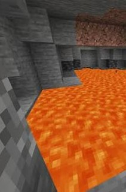
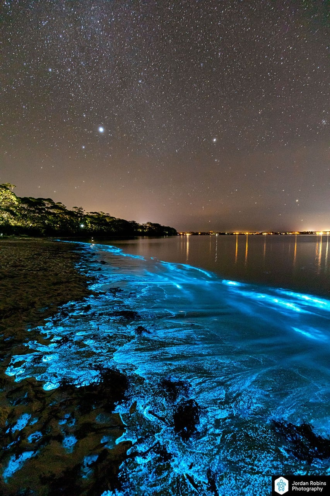

Là où la terre rencontre le feu, l'eau devient lumière.

Lake Sap repose sur un réseau de cavités souterraines traversées par des conduits de lave actifs.
Ces tunnels naturels, vestiges d'anciennes coulées, canalisent la chaleur magmatique vers les eaux
profondes du lac. La température y reste stable toute l'année — entre 28 et 32 °C — créant un
microclimat aquatique propice au développement d'organismes thermophiles.
Les parois poreuses des galeries permettent également un apport constant en minéraux dissous
(soufre, phosphore, fer), qui enrichissent l'écosystème et nourrissent les micro-organismes à la
base de la chaîne alimentaire.

La chaleur constante des conduits souterrains offre deux avantages majeurs :
Métabolisme accéléré — Les températures élevées stimulent la reproduction des
dinoflagellés, qui atteignent des densités exceptionnelles.
Activité nocturne prolongée — Contrairement aux baies bioluminescentes classiques,
où le phénomène dépend des saisons, Lake Sap brille pratiquement chaque nuit.
Le résultat : une lueur bleu-vert qui ondule à la surface dès que l'eau est agitée — par le vent,
un poisson, ou le passage d'une embarcation.